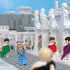

|
|
|
Acts 17
|
|
| 17:1
Now when they had passed through Amphipolis and Apollonia, they came to
Thessalonica, where was a synagogue of the Jews: |
|
| 17:2
And Paul, as his manner was, went in unto them, and three sabbath days
reasoned with them out of the scriptures, |
|
| 17:3
Opening and alleging, that Christ must needs have suffered, and risen
again from the dead; and that this Jesus, whom I preach unto you, is Christ. |
|
| 17:4
And some of them believed, and consorted with Paul and Silas; and of the
devout Greeks a great multitude, and of the chief women not a few. |
|
| 17:5
But the Jews which believed not, moved with envy, took unto them certain lewd fellows of
the baser sort, and gathered a company, and set all the city on an uproar,
and assaulted the house of Jason, and sought to bring them out to the
people. |
 (17:5) "The Jews which believed not, moved with envy." (17:5) "The Jews which believed not, moved with envy."
|
| 17:6
And when they found them not, they drew Jason and certain brethren unto
the rulers of the city, crying, These that have turned the world upside down
are come hither also; |
|
| 17:7
Whom Jason hath received: and these all do contrary to the decrees of
Caesar, saying that there is another king, one Jesus. |
|
| 17:8
And they troubled the people and the rulers of the city, when they heard
these things. |
|
| 17:9
And when they had taken security of Jason, and of the other, they let them
go. |
|
| 17:10
And the brethren immediately sent away Paul and Silas by night unto Berea:
who coming thither went into the synagogue of the Jews. |
|
| 17:11
These were more noble than those in Thessalonica, in that they received
the word with all readiness of mind, and searched the scriptures daily,
whether those things were so. |
|
| 17:12
Therefore many of them believed; also of honourable women which were
Greeks, and of men, not a few. |
|
| 17:13
But when the Jews of Thessalonica had knowledge that the word of God was
preached of Paul at Berea, they came thither also, and stirred up the
people. |
(17:13) "The Jews of Thessalonica ... stirred up the people."
|
| 17:14
And then immediately the brethren sent away Paul to go as it were to the
sea: but Silas and Timotheus abode there still. |
|
| 17:15
And they that conducted Paul brought him unto Athens: and receiving a
commandment unto Silas and Timotheus for to come to him with all speed, they
departed. |
Paul
in Athens
|
| 17:16
Now while Paul waited for them at Athens, his spirit was stirred in him,
when he saw the city wholly given to idolatry.
|
| 17:17
Therefore disputed he in the synagogue with the Jews, and with the devout
persons, and in the market daily with them that met with him.
|
| 17:18
Then certain philosophers of the Epicureans, and of the Stoicks,
encountered him. And some said, What will this babbler say? other some, He
seemeth to be a setter forth of strange gods: because he preached unto them
Jesus, and the resurrection. |
 (17:18) "Philosophers of the Epicureans, and of the Stoicks, encountered him.
And some said, What will this babbler say? other some, He seemeth to be a setter forth of strange gods." (17:18) "Philosophers of the Epicureans, and of the Stoicks, encountered him.
And some said, What will this babbler say? other some, He seemeth to be a setter forth of strange gods."
The philosophers in Athens considered Paul a "babbler" who worshipped strange gods.
|
| 17:19
And they took him, and brought him unto Areopagus, saying, May we know
what this new doctrine, whereof thou speakest, is?
|
| 17:20
For thou bringest certain strange things to our ears: we would know
therefore what these things mean. |
|
| 17:21
(For all the Athenians and strangers which were there spent their time in
nothing else, but either to tell, or to hear some new thing.) |
|
| 17:22
Then Paul stood in the midst of Mars' hill, and said, Ye men of Athens, I
perceive that in all things ye are too superstitious. |
(17:22) "Ye men of Athens, I perceive that in all things
ye are too superstitious." Paul, a guy who converted to Christianity
because he heard voices, calls the Greeks too darned superstitious. Talk about the pot calling the kettle black!
|
| 17:23
For as I passed by, and beheld your devotions, I found an altar with this
inscription, TO THE UNKNOWN GOD. Whom therefore ye ignorantly worship, him
declare I unto you.
|
| 17:24
God that made the world and all things therein, seeing that he is Lord of
heaven and earth, dwelleth not in temples made with hands; |
 (17:24) "He is Lord of heaven and earth." (17:24) "He is Lord of heaven and earth."
Who is the Lord of the earth?
|
| 17:25
Neither is worshipped with men's hands, as though he needed any thing,
seeing he giveth to all life, and breath, and all things;
|
| 17:26
And hath made of one blood all nations of men for to dwell on all the face
of the earth, and hath determined the times before appointed, and the bounds
of their habitation; |
|
| 17:27
That they should seek the Lord, if haply they might feel after him, and
find him, though he be not far from every one of us: |
|
| 17:28
For in him we live, and move, and have our being; as certain also of your
own poets have said, For we are also his offspring. |
|
| 17:29
Forasmuch then as we are the offspring of God, we ought not to think that
the Godhead is like unto gold, or silver, or stone, graven by art and man's
device. |
(17:29) "We are the offspring of God."
Are we all God's children?
|
| 17:30
And the times of this ignorance God winked at; but now commandeth all men
every where to repent:
|
| 17:31
Because he hath
appointed a day, in the which he will judge the world in righteousness by that
man whom he hath ordained; whereof he hath given assurance unto all
men, in that he hath raised him from the dead. |
 (17:31) "He will judge the world ... by that man." (17:31) "He will judge the world ... by that man."
Is Jesus God?
|
| 17:32
And when they heard of the resurrection of the dead, some mocked: and
others said, We will hear thee again of this matter.
|
| 17:33
So Paul departed from among them. |
|
| 17:34
Howbeit certain men clave unto him, and believed: among the which was
Dionysius the Areopagite, and a woman named Damaris, and others with them.
|
|
|